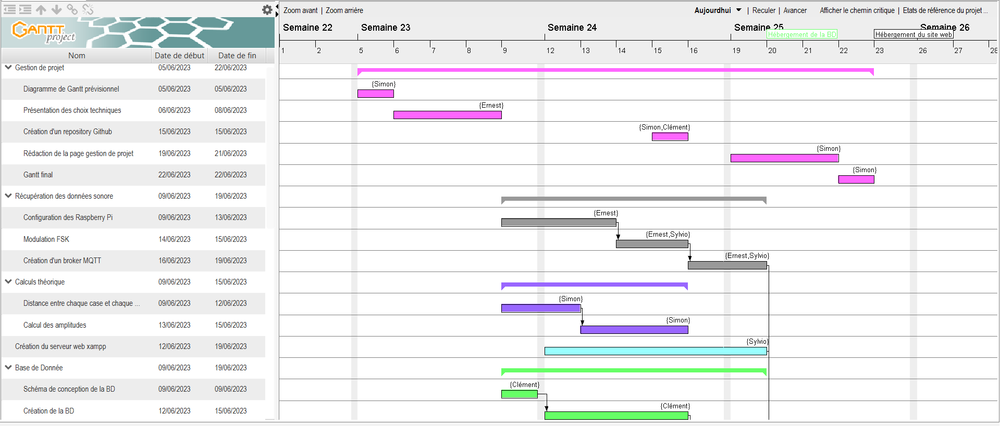
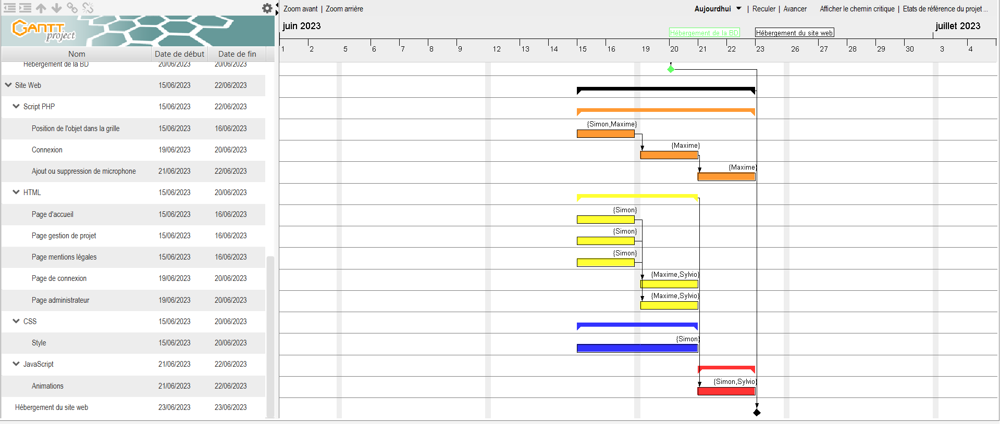
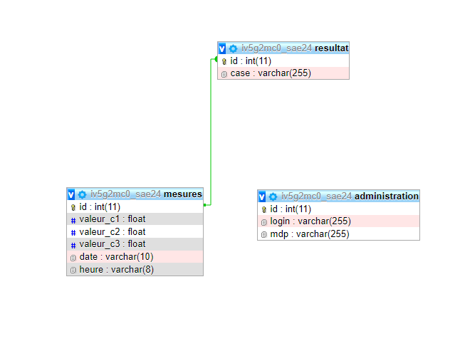

Diagramme de Gantt final
Voici ci-dessous le diagramme de Gantt final de notre projet :

– Compréhension d’une architecture complète (réseaux, télécommunications, système et service)
● Analyse de l’ensemble des briques
● Intervention sur les composants
● Interaction entre les composants
● Proposition de pistes d’amélioration
- Exploiter un signal sonore (sinusoïdal) émis par un objet et reçu par trois microphones.
– Estimer la position en (x,y) de l’objet dans une pièce.
– Présenter l’estimation de la position sur une interface dédiée (site web).
Calculer distance de chaque case pour chaque microphone (code + stockage)
Cartographier pour chaque microphone amplitude signal (amplitude pour chaque case de la pièce) (code)
Déterminer nombre de bits nécessaire pour plage valeur amplitude
Installer et Configurer broker, serveur web, base de données
Simuler arrivée de trois amplitudes sur récepteur → coder estimation de la position de l’objet
Simuler déplacement objet sur plusieurs cases → coder estimation du déplacement de l’objet
Concevoir une interface pour affichage du résultat
Concevoir un site web pour présentation du projet
GASPAROTTO Sylvio s'occupe du Raspberry Pi à simuler
CALMELS Maxime se concentre sur le site web, de la création du site web en html et css à l'affichage des données en php en passant par la connexion à un compte administrateur avec des formulaires et l'ajout ou la suppression de celle-ci en php.
CATHALA Simon quand à lui touche un peut a tous les aspects du projet
NSIMA Ernest vas s'occuper de la partie compte rendue
Voici ci-dessous le diagramme de Gantt prévisionnel de notre projet :
 La base de donnée (BD) utilisé pour cette SAE est une base SQL avec trois table différentes, ses tables sont :
- Une table adiministration qui permet la gestion du ou des administrateur(s) avec une ligne login et une ligne mdp.
- Une table mesures dans laquelle on stocke toutes les amplitudes des 3 capteurs et la date et l'heure, avec cela ona à ajouter un id qui est une clé primaire
- Une table resultat dans laquelle on stocke la case calculé pour les 3 capteurs avec un id qui est une clé étrangère et qui permet de relié les deux tables mesures et résultat.
Voici ci dessous l'image de la Base de donnée dans PhpMyAdmin
. Voici ci-dessous le diagramme de Gantt final de notre projet :